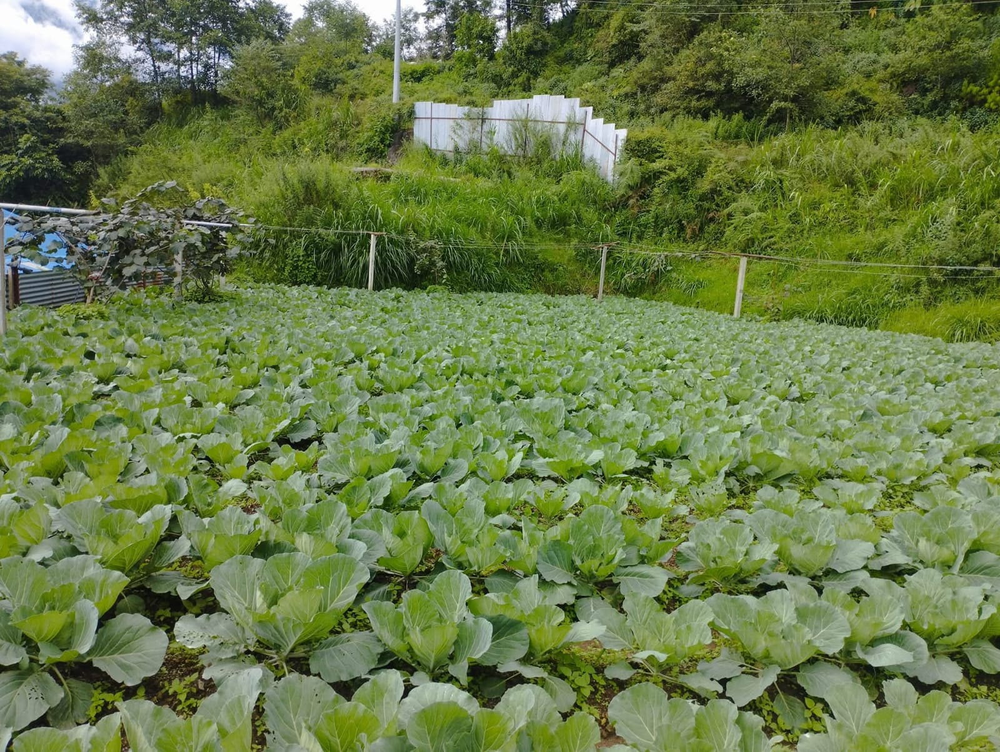
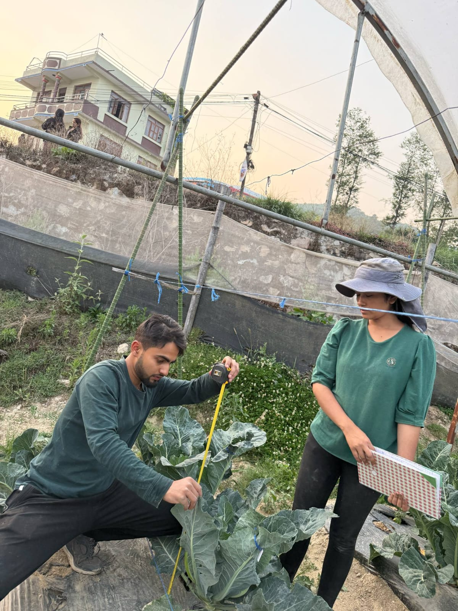
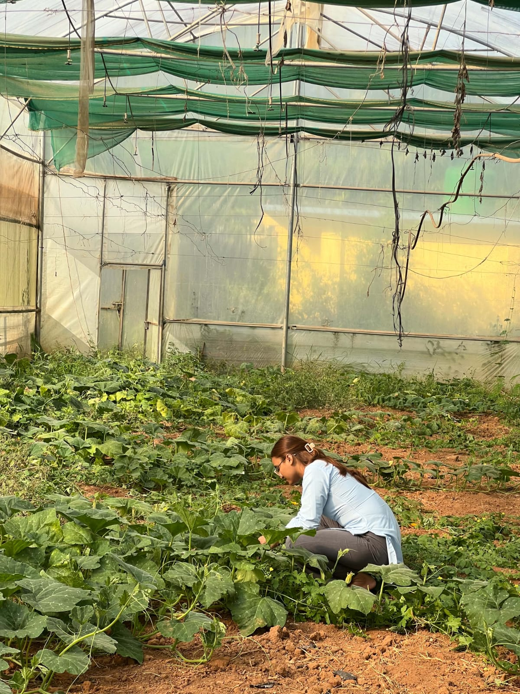
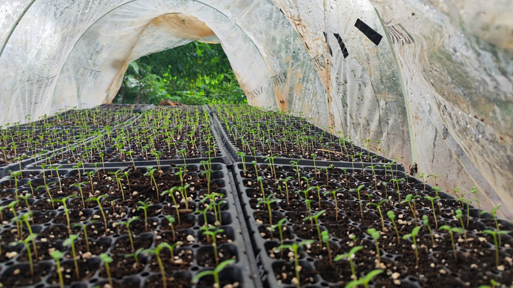
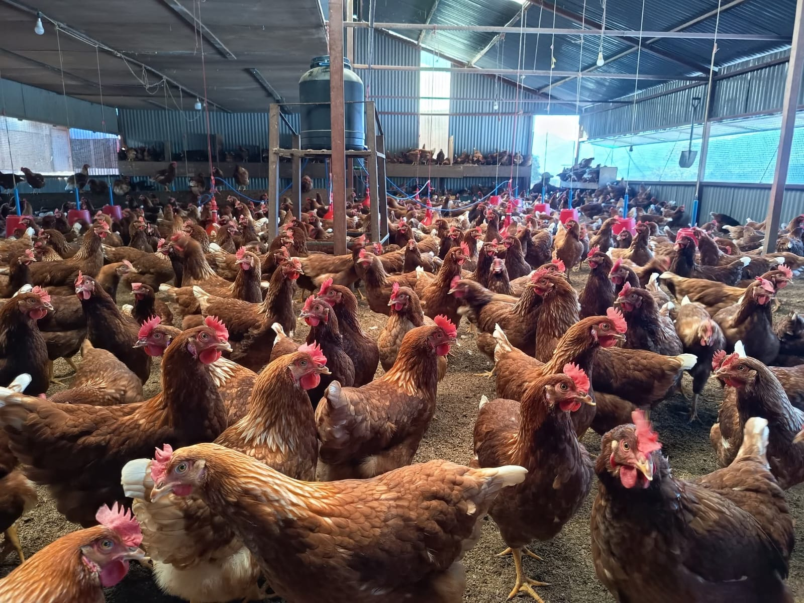
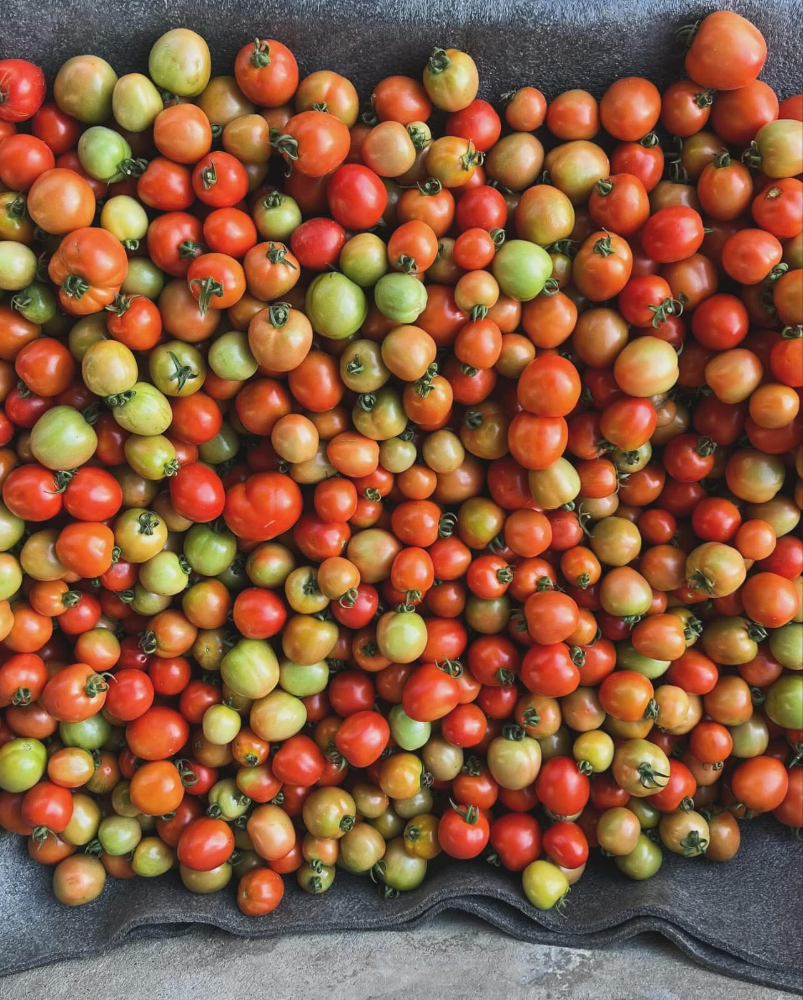
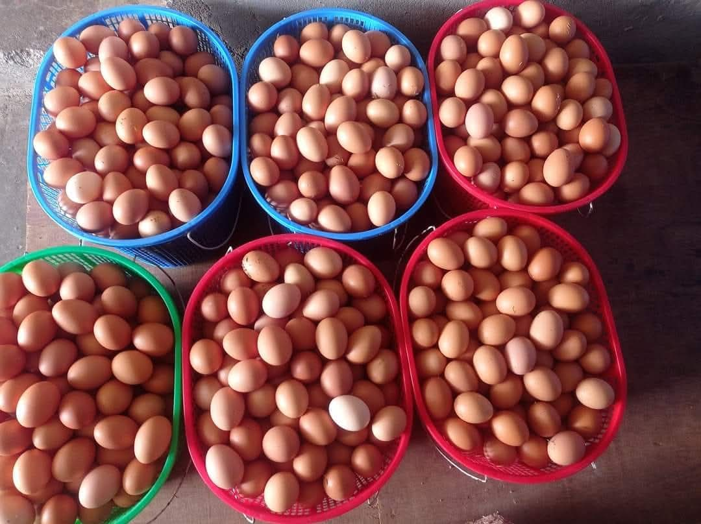
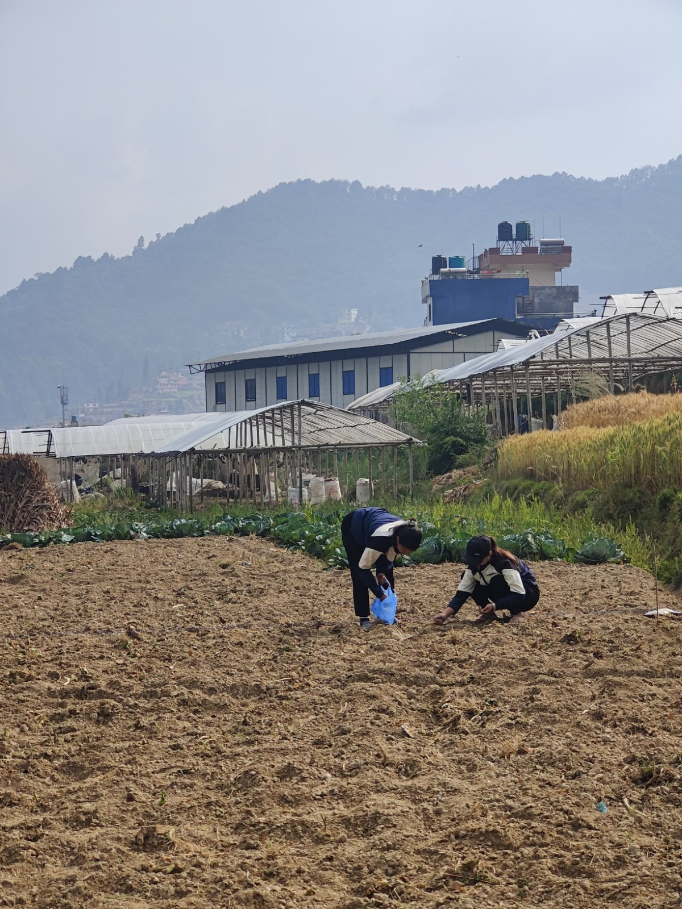

Agricultural Advice
Personalized farming guidance tailored to your specific land and crop goals.
Get support →We are a hands-on farming and poultry team based in Ichchakamana, Chitwan. We grow seasonal vegetables, raise high-quality layer chickens for fresh eggs, and work directly with local farmers to build stronger, healthier harvests across Nepal.

We started Samriddhi Krishi and Poultry in 2079 BS with a simple mission: to make farming in Nepal more practical, productive, and rewarding. Based in Ichchakamana-03, Chitwan, we cultivate our own crop fields and layer poultry farms while partnering closely with neighboring farmers. We handle every step, from soil preparation and seedling care to harvesting and bringing fresh produce directly to market.
Discover what we do →
We build our support around real field experience, helping you solve actual farm challenges from soil preparation to market delivery.
Personalized farming guidance tailored to your specific land and crop goals.
Get support →We visit your fields in person to evaluate plant health, soil conditions, and growth.
Quick and accurate diagnosis to protect your crops from damage before it spreads.
High-grade seeds, organic fertilizers, and tools tested directly on our own fields.
Hands-on help with modern drip irrigation, trellising, and crop management.
Vigorous, disease-free seedlings raised in our protected nursery greenhouse.
Daily harvested eggs from our healthy Hy-Line and Lohmann Brown layer hens.
Naturally grown, freshly picked seasonal vegetables delivered to markets.

Good farming decisions start right in the field. When you reach out to us, we visit your farm, inspect your plants up close, figure out what's holding back your growth, and give you practical, straightforward recommendations that work.
We know that a strong harvest begins with healthy young plants. That's why we sprout and nurture disease-resistant vegetable seedlings in our nursery trays, giving your crops the best possible start.

We cultivate seasonal vegetables suited to the Chitwan and Ichchakamana climate belt.
Key crops we grow and support during the cooler months in Ichchakamana.
At our Ichchakamana poultry farm, we raise Hy-Line Brown and Lohmann Brown hens under strict health and nutrition guidelines. We collect fresh eggs every morning for local homes, stores, and wholesale buyers.

Browse our core products below and get in touch with us for daily pricing and bulk availability.

Freshly picked seasonal vegetables for home cooking and market retail.

Farm-fresh eggs collected daily for retail and wholesale orders.
Vigorous seasonal seedlings ready for transplanting into your fields.

Farming comes with hard work and uncertainty, but you don't have to face it alone. We support local growers with honest technical advice, high-grade nursery seedlings, pest management, and direct connections to market buyers so your hard work pays off.
We connect local farm harvests to regional markets across central Nepal, supplying fresh eggs and vegetables to Chitwan, Dhading, Pokhara, and Kathmandu.
Wholesale Enquiry ↗Take a look at daily life across our crop fields, seedling nurseries, poultry sheds, and field visits at Samriddhi Krishi.
Meet our dedicated team combining hands-on farming experience, technical crop knowledge, poultry management, and customer care to support growers and fresh food production.
Managing Director
“To build a prosperous and sustainable agricultural future for Nepal through innovation, quality, and community support.”
“To connect modern farming, healthy poultry production, and direct market access, delivering fresh food while boosting farmer livelihoods across Nepal.”
Have a question that isn't listed here? Get in touch with our team directly.
Contact us →We provide personalized farming advice, field visits, pest and disease diagnosis, input recommendations, seedling supply, and practical technical guidance.
Yes! We visit your land in person to inspect soil health, plant growth, and field setups.
Yes, we perform on-site diagnosis and suggest safe, practical treatments to protect your harvest.
Yes, we offer quality seeds, fertilizers, and supplies tested directly on our own farm fields.
Yes, we nurture disease-resistant vegetable seedlings in nursery trays. Varieties depend on the planting season.
We are based in Ichchakamana-03, Chitwan, and supply local and regional markets across Chitwan, Dhading, Pokhara, and Kathmandu.
Yes, fresh eggs from our Hy-Line and Lohmann Brown hens are available for retail customers and bulk wholesale orders.
Yes! Consumers can buy fresh eggs directly from our farm or retail supply points.
Yes, we arrange direct market delivery for eggs and fresh vegetables across central Nepal.
Call us at 9807956835 or email skrishiandpoultry@gmail.com.
Whether you're a farmer seeking advice, a buyer looking for daily fresh eggs and vegetables, or a market partner, we'd love to hear from you.